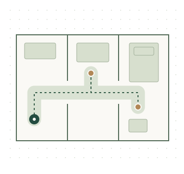

跨房间任务空间 · 概念示意Multi-room task spaces · Concept sketch
面向跨房间长任务的场景生成Task-oriented scene generation for multi-room, long-horizon tasks
围绕机器人的任务需求，联合考虑任务物体、家具布局、操作空间与跨房间路线，探索更具可操作性的场景生成方法。Exploring scene generation that accounts for task objects, furniture layouts, operation spaces, and cross-room routes together, with the aim of making environments more usable for robot tasks.
重点关注：基础功能布局、任务相关空间的持续保护，以及随携物状态变化的连续任务链验证。Key interests include functional base layouts, preserving task-relevant spaces, and validating task chains as the robot's carried-object state changes.
当前侧重布局与简化几何验证；机械臂运动规划和机器人物理执行仍需独立验证。Current validation focuses on layouts and simplified geometry. Arm motion planning and physical robot execution require separate validation.